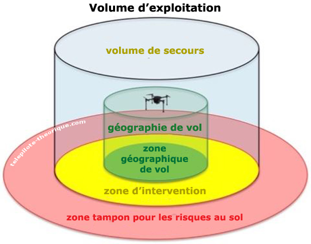

Limitations des performances humaines
Un télé-pilote doit être conscient qu'il peut éprouver de la fatigue
En raison de la pression commerciale liée à ses missions.
Comment le «point aveugle» peut affecter le pilote à distance d'un UAS lors d'un vol ?
Il masque une partie du champ visuel.
Une alcoolémie, même légère :
Dégrade votre perception de la réalité.
Les conditions qui influencent négativement la vision sont :
1 - une pluie forte
2 - la neige
3 - le vent
4 - une faible température de l'air
5 - des cendres volcaniques
1, 2 et 5.
Concernant la fatigue accumulée :
Même lors d'évolutions faciles elle peut atteindre un niveau inacceptable.
La pratique régulière d'un sport et une alimentation saine :
Contribuent à favoriser une bonne santé mentale et physique.
Une exposition régulière et forte au bruit peut entrainer :
Une atteinte irrémédiable de l'audition.
Le processus par lequel l'homme prend conscience des informations du monde extérieur à l'aide de ses sens est dit...
Cognitif.
Concernant la probabilité d'un risque, l'affirmation juste est :
La probabilité est le quotient de la gravité sur le risque. Risque = Probabilité x Gravité ou Gravité / Risque = Probabilité
La meilleure prévention contre le stress consiste pour un pilote à distance, à...
Rester dans une situation que vous savez maîtriser, c'est-à-dire dans les limites de votre savoir-faire.
L'élément du corps humain qui va permettre d'améliorer la perception de l'orientation est :
La vue.
Une exposition du regard d'une à deux secondes à la lumière directe du soleil peut entrainer :
Un éblouissement suffisamment important pour empêcher de voir l'UAS pendant 10 secondes.
Les mouvements oculaires permettant un bon balayage visuel pour assurer l'anticollision...
Ne devraient pas dépasser 10 à 15 degrés avec une surveillance de chaque secteur pendant au moins 1 seconde.
Quel est l'effet de la fatigue sur l'attention ?
Elle réduit la capacité de gérer plusieurs sujets.
Lors d'un vol, vous êtes confronté(e) à une situation de stress. Selon vous, l'effet de ce stress sera :
Cumulatif, car le facteurs de stress s'additionnent entre eux. C'est la somme globale qu'il faut gérer.
Le coup de chaleur et la déshydratation peuvent être évités en...
Buvant de l'eau avant de ressentir la soif.
Les symptômes cognitifs dues au stress peuvent inclure :
Un sentiment de fatigue, de la confusion et dépression.
Vous avez acheté 2 drones : un quadrirotor et un à voilure fixe.
Je lis soigneusement les documentations sachant que ces machines sont très différentes.
Procédures opérationnelles & Performances de vol des UAS
Qui est responsable de s'assurer que l'aéronef sans équipage à bord est apte au vol ?
Le pilote à distance.
Vous allez faire voler votre UAS par temps très chaud, vous pouvez vous attendre
à une diminution des performances en raison de la diminution de la densité de l'air
Quel paramètre permettra d'assurer une bonne maniabilité de votre UAS tout au long de ses évolutions en vol
S'assurer d'une bonne sécurisation de la charge transportée.
Le geocaging consiste pour le télépilote
à établir un volume dans lequel l'UAS doit évoluer.
Préalablement au vol en scénario STS-02, la fonction geocaging doit être
Réglée et exploitable.
La zone au-dessus de la surface de la terre qui entoure le volume d'exploitation, et est définie de manière à réduire au minimum les risques pour les tiers à la surface dans l'éventualité où l'aéronef sans équipage à bord sortirait du volume d'exploitation, est
La zone tampon pour les risques au sol. 
«La zone au sol dans laquelle l'UAS est exploité et à l'intérieur de laquelle l'exploitant d'UAS peut garantir que seules les personnes participant à l'exploitation sont présentes», cette définition correspond à
La zone contrôlée au sol.
Le ou les volumes d'espace aérien, définis dans l'espace et dans le temps, dans lesquels l'exploitant d'un UAS prévoit d'effectuer le vol en procédures normales d'exploitation, correspond à la définition suivante
La géographie de vol.
La zone géographique de vol est :
La projection de la géographie du vol sur la surface de la terre.
La zone contrôlée au sol se compose des zones :
1 - géographique de vol
2 - d'intervention
3 - tampon pour les risques au sol
4 - d'interdiction de survol
5 - de protection juridique
1, 2 et 3.
Sur une carte d'échelle 1 : 250 000, 2,5 cm représentent :
6,25 km
Afin de répondre à une demande d'exploitation par UAS, on vous demande de transporter des liquides phytosanitaires. Cette opération est réalisable :
Avec un UAS certifié et l'exploitation relève de la catégorie certifiée.
Vous voulez faire voler votre drone en STS-1 au-dessus d'une zone avec un faible relief, à une hauteur supérieure à 120 m. Pour cela :
Vous pouvez le faire en scénario spécifique sous certaines conditions.
Dans le cadre de l'exploitation d'un drone en STS-02, la distance maximale entre observateurs de l'espace aérien se limite à :
2 km. 
A la préparation du vol, vous vous renseigner sur les observations et prévisions météorologique, vous trouverez des informations pertinentes :
Sur le site internet de l'aviation civile qui vous orientera vers des liens pertinents pour obtenir des informations météorologiques à jour.
L'abréviation «BVLOS» signifie...
Beyond visual line of sight.
Le document qui vous permet de savoir s'il y a une activité particulière en cours sur un aérodrome situé à proximité de votre zone de vol est :
Le NOTAM.
Un aéronef habité approche de votre zone de vol, la procédure recommandée est :
Vous descendez et interrompez votre vol.
En vol, je constate qu'il y a des tiers non impliqués dans la zone d'exploitation, ma réaction est :
Je me pose en les évitant.
Vous achetez un UAS de classe C5, son fonctionnement :
Doit le rendre indépendant de l'unité de commande.
En VLOS, au-dessus d'une zone contrôlée au sol, sans survole d'un rassemblements de personnes, le drone peut avoir une dimension caractéristique maximale (envergure, ou un diamètre de rotor ou une distance entre les rotors) :
Pouvant aller jusqu'à 3 mètres.
Le plan d'intervention d'urgence consiste à :
Disposer d'une réponse adaptée et réfléchie en cas de survenance d'une situation d'urgence.
Quelle affirmation est juste pour un vol en STS-01 :
L'UAS doit rester en vue directe de son pilote.
Dans le cadre d'une check-list prévol, que représente la procédure connue sous le nom de «MEUH» :
M météo, E environnement, U UAS et H facteurs Humain
Le plan d'intervention d'urgence permet entre autre :
De définir les critères permettant d'identifier une situation d'urgence.
En scénario STS-01, un système d'interruption du vol (FTS) est une mesure technique obligatoire pour le vol, qui également utilisée :
Pour atténuer le risque au sol.
Un UAS de classe 6 doit être capable de fournir pendant le vol, au pilote à distance, des informations claires et concises sur :
Sa position géographique, sa vitesse et sa hauteur au-dessus de la surface ou du point d'envol.
Pour connaître les limites techniques d'utilisation de votre UAS, vous utilisez :
Le manuel d'utilisation.
Atténuation des risques aérien & Atténuation des risques au sol
En tant qu'exploitant, vous pouvez être tenu de procéder à une évaluation des risques de l'opération envisagée en utilisant la méthodologie connue sous le nom de
SORA : Specific Operations Risk Assessment (étude de risque spécifique).
Sauf dans le cas d'un drone captif, concernant la dégradation et/ou la perte du signal radio qui pourraient compromettre la sûreté de l'exploitation, le pilote à distance reçoit
Une alerte lorsque la liaison est sur le point d'être coupée ou de se dégrader, ainsi qu'une autre alerte lorsque la liaison est coupée.
Pour un UAS de classe C5 ou C6, en cas de dégradation du service de liaison (commande et contrôle), le système
Alerte le télé-pilote.
Le principe de fonctionnement d'un système d'interruption du vol (FTS) est par exemple
De couper l'alimentation électrique du drone pour entraîner sa chute.
Concernant le FTS, son but est de :
Diminuer l'angle d'impact au sol et d'arrêter le fonctionnement de l'UAS.
Le risque intrinsèque lié à une exploitation d'un UAS en catégorie spécifique (scénario STS) par rapport à une exploitation en catégorie Ouverte est plus élevé car ?
Le risque des tiers au sol est plus important.
Lors de l'exploitation d'un UAS à proximité immédiate d'une zone à population dense, une méthode adaptée pour protéger la zone de contrôle au sol est
La mise en place d'une clôture.
Le risque au sol est réduit :
Par la mise en place de barrières ou d'un dispositif équivalent, adaptée en fonction de la densité de population.
Les procédures d'atténuations stratégiques s'appliquent :
Avant le décollage. A l'examen, on vous demande de connaitre les mesures d'atténuations techniques, opérationnelles, stratégiques et tactiques
L'ajout d'un système d'interruption du vol (FTS) sur un UAS est considéré comme une mesure d'atténuation des risques aériens de type :
Technique.
Les procédures d'atténuations tactiques s'appliquent :
Pendant le vol.
Dans le cadre d'un vol en scénario STS-01, vous vous faites assister d'un observateur visuel pour vous aider à limiter le risque aérien. Il s'agit d'une mesure d'atténuation :
Opérationnelle.
Pour l'exploitation d'un UAS en STS-01 et/ou STS-02, la zone d'intervention doit s'étendre au-delà de la ou des limites de la zone géographique de vol, d'au moins
10 m.
Vérifiez si les affirmations suivantes sont justes ou fausses pour l'exploitation d'un drone sous scénario STS-01 :
1 - il est possible d'exploiter jusqu'à 2 aéronefs en même temps.
2 - le pilote ne doit pas se trouver à bord d'un véhicule en mouvement
1 est fausse, 2 est vraie.pareil pour STS-02
En cas de perte de la liaison de commande de vol de l'UAS, si celui-ci dépasse une des limites de la zone tampon :
La fonction geocaging entraîne la coupure de l'alimentation électrique qui déclenche le dispositif de réduction d'impact au sol.
Le risque au sol est réduit :
Par l'emploi d'un dispositif pyrotechnique d'amortissement d'impact.
Votre drone sort de la géographie de vol, quitte le volume d'exploitation puis pénètre dans la zone tampon, vous déclenchez dans l'ordre :
La procédure d'intervention, puis la procédure d'urgence.
Vous faites appelle à un observateur visuel en STS-01, vous devez vous assurer :
Qu'une communication claire et efficace soit maintenue entre vous.
Sous scénario STS-02, est-il possible de voler à plus de 2 km du pilote à distance avec 2 observateurs de l'espace aérien ?
Non, la distance d'éloignement du drone par rapport au pilote est limitée à 2 km.
La finalité du processus de notification, de traitement et de suivi des évènements de sécurité est...
De faire progresser la sécurité aérienne et non de déterminer d'éventuelles responsabilités.
Connaissances générales de l'UAS
Pour stocker sur une longue période une batterie LiPo, il est recommandé
De la charger à 50% environ.
Le sigle «CG» que l'on retrouve sur les abaques de domaine de vol, signifie
Centre de Gravité.
Sur ce drone de type avion, la position la plus adaptée pour ajouter une charge (capteur, caméra, etc..) est celle qui porte le numéro
3 
35C indiqué sur une batterie destinée à un drone indique
La capacité de décharge de la batterie.
A l'aide de cette image, indiquez quel aéronef multi-rotor sans équipage à bord va se mettre en roulis ou s'incliner à droite
C
A l'aide de cette image, indiquez quel aéronef multi-rotor sans équipage à bord va se rapprocher de vous
B

L'attitude de vol d'un aéronef sans équipage à bord de type multi rotor est contrôlée :
Par les moteurs qui modifient leur vitesse de rotation en fonction de la direction souhaitée du vol.
Le courant de charge d'une batterie est donné :
En Ampère (A).
Vous avez une batterie marquée 5C 1500 mAh, quelle est sa capacité de charge maximale ?
7,5 A.
L'effet mémoire affecte particulièrement les batteries :
NiCD
Le service de communication assurant la commande et le contrôle entre l'aéronef sans équipage à bord et l'unité de commande (CU) se nomme :
Le service de liaison C2.
D'après l'image ci-dessous, les batteries branchées en série sont représentées par le dessin numéro :
1
D'après l'image ci-dessous, les batteries branchées en série sont représentées par le dessin numéro :
3

La capacité de décharge maximale d'une batterie :
Est un point important qui permet de délivrer un courant supérieur à la capacité de la batterie pendant une durée réduite.
Sur un drone de type multirotor comme celui présenté sur la photo, le centre de gravité (CG) se situe très probablement à l'endroit indiqué par la flèche numéro :
2
Le sigle «IMU» signifie en français :
Unité de mesure inertielle.
Pour faire avancer un aéronef sans équipage à bord de type 'hélicoptère' :
Il faut incliner le rotor principal vers l'avant.
La résultante d'un courant électrique qui passe au travers d'un conducteur entraine :
Un effet de chauffe.
L'acronyme FTS signifie en français :
Système d'interruption du vol. FTS : Flight Termination System.
A mesure qu'un aéronef multi-rotor ou de type 'hélicoptère' accélère, son attitude devient...
à piquer.
Dans une centrale inertielle (IMU), les accélérations sont mesurées dans un repère orienté selon:
Les axes de l'aéronef (longitudinal, latéral, normal).
Un système de positionnement visuel (VPS) fonctionne avec :
Un système de capteurs optiques (caméras) et des capteurs ultrasons.
L'IMU (unité de mesure inertielle) se trouve :
Dans l'UAS.
La proposition fausse concernant le processus de charge d'une batterie Li-Po ou Li-ion est :
Le chargement peut se faire sans sortir la batterie de l'UAS.
La distance verticale entre votre drone et la surface au sol correspond à :
La hauteur.
La vitesse vraie (vitesse réelle) est la vitesse de l'aéronef :
Par rapport à la masse d'air.
La force s'opposant au déplacement d'un aéronef en vol est appelée...
La traînée.
Un vent d'une vitesse de 15 noeuds équivaut à :
7 m/s.
Météorologie
Le nuage qui indique la présence de courants verticaux importants à proximité du sol est
Le Cumulus.
Une nébulosité de 5 à 7 octas est indiquée dans un METAR par l'abréviation :
BKN. FEW : nuages rare 1 à 2 octas.
SCT : nuages épars c'est 3 à 4 octas.
BKN : nuages fragmentés 5 à 7 octas.
OVC : ciel couvert 8 octas.
Le code NSC :
Indique qu'il n'y a pas de nuages significatifs. NSC (No Significant Clouds) : nuages non significatifs.
Dans un METAR, le codage suivant '8000 3000SW BR' signifie :
Visibilité dominante de 8000 m et minimale de 3000 m dans le Sud-Ouest avec de la brume.
'BECMG FM 1100 -SHRA' dans un METAR signifie
Deviendra, à partir de 11h UTC, averses de pluie faibles. BECMG FM (BECOMING FROM) : devenant à partir de 11h.
Vous prenez connaissance du METAR de Troyes :LFQB 100900Z 31006KT 6000 NSC M00/M01 Q1035= Vous observez la présence d'un important groupe d'oiseaux dans la géographie de vol
Vous attendez que la situation s'améliore pour débuter vos évolutions.
Le code météorologique 'FZDZ' indique :
Bruine se congelant modérée.
Le code météorologiques '+SHRA' indique
Forte averse de pluie. 
Dans un METAR, la présence de brume (BR) indique une visibilité comprise entre :
1 km et 5 km.
La circulation du vent sur le relief va générer de la :
Turbulence de frottement.
Dans un message METAR, le terme 'VC' signifie :
Au voisinage. situé entre environ 8 et 16 km par rapport au point de référence d'un aérodrome
L'unité de mesure de la pression de l'air dans le système international est...
Le Pascal (Pa). 1 Pa = 1 N/m²
Identifiez le type de nuage qui vous signalera une forte possibilité que l'air est instable :
Le Cumulonimbus.
«Message spécial d'aérodrome, émis quand un changement significatif des conditions météorologiques a été observé».
SPECI.
A une hauteur de 100 mètres vous pouvez estimer que la vitesse du vent est :
50% plus fort qu'au sol.
Dans un METAR, la présence de brouillard (FG) indique une visibilité :
Inférieure à 1 km.
Vous prenez connaissance du METAR de Toulouse Blagnac :LFBO 060800Z 29010KT 9999 SCT016 BKN050 19/16 Q1019 NOSIG=Les nuages qui sont l'objet du code SCT016 couvrent :
Moins de la moitié du ciel et leur base est à 1600 ft.
Indiquer les conditions pour lesquelles les performances d'un aéronef sans équipage à bord seront les meilleures :
Par temps froid, à proximité du niveau de la mer et avec une pression atmosphérique élevée.
Que représente ce symbole sur une carte de temps significatif ?
Averse. 
Vous prenez connaissance du TAF de Rodez Marcillac: LFCR 140800Z 1409/1418 25008KT 4000 RADZ OVC002 BKN025 OVC250 TEMPO 1409/1412 1500 DZRA OVC002 BKN020 BECMG 1412/1415 28006KT BKN020 SCT050 BECMG 1415/1418 SCT020 SCT050
Le code TEMPO indique une chute de la visibilité à 1500 m :
Entre 9 h à 12 h UTC.
Le givrage :
Se forme sur les ailes et rotors, entrainant une diminution progressive des performance de l'appareil.
La turbulence thermique dépend : 1 - de l'environnement 2 - des contrastes du sol 3 - du degré d'instabilité de l'air 4 - de la compétence du pilote à distance
1 - 2 - 3.
Documents
Carte OACI
carte de type conique conforme (carte OACI 1/500 000) la direction d'un méridien donne la direction : du nord vrai.
OACI IGN au 1/500 000, un point rouge entouré d'un cercle (rouge) représente un parc ou une réserve naturelle de petite taille.
Attention avec un carré rouge représente une installation portant une marque distinctive ou une centrale nucléaire.
Carte de restriction pour la catégorie ouvert et l'aéromodélisme est élaborée par la DGAC et l'IGN et disponible sur géoportail.gouv
Pour connaître les heures d'activité de la zone réglementée voir le complément aux cartes aéronautiques de vol à vue.
Les obstacles, chiffre entre parenthèse : hauteur en pied ASFC, chiffre en haut : altitude du sommet par rapport au niveau moyen de la mer
Carte VAC
DA : C’est la distance de l’aéronef à la droite support de l’axe de piste
DC : C’est la distance de l’aéronef au centre de l’aire d’approche finale et de décollage (le centre de l’hélistation).
Zone contrôlée au sol : UAS est exploité dans cette zone et l'exploitant garanti que seul les participants sont présents.
Longueur des pistes revêtues sur les cartes VAC en m
Sur une carte d'approche à vue (VAC), les directions et les distances des aérodromes voisins sont donnée par : cap magnétique et en NM
Guide aviation
 Angles :
Angles :
entre l'horizontal et trajectoire (aussi appellée vent relatif) --> pente (c'est comment monte l'avion)
l'angle entre trajectoire et axe longitudinal (ou corde de profil) --> incidence.
pente + incidence = assiete : qui est l'ange entre l'axe longitudinal de l'avion et l'horizontal
incidence de l'aile : angle compris entre : La corde de profil de l'aile et le vent relatif.
Météo
METAR --> observation régulière pour l'aviation diffusé toutes les heures ou toutes les demi-heures pour les gros aéroports.

 Le METAR peut contenir une partie de prévision TEMPO (temporairement) --> tendance de prévision d'atterrissage valable pour les deux heures qui suivent l'observation.
TAF (prévision) court : tous les 3h valable 9h ; TAF long tous les 6h valable 24h ou 30h
Le METAR peut contenir une partie de prévision TEMPO (temporairement) --> tendance de prévision d'atterrissage valable pour les deux heures qui suivent l'observation.
TAF (prévision) court : tous les 3h valable 9h ; TAF long tous les 6h valable 24h ou 30h
Symboles TEMSI (TEMps SIgnificatif)

 Nuage lenticulaire (1) associé à une onde relief ;
Nuage lenticulaire (1) associé à une onde relief ;
(3) un nuage à caractère de nuage lenticulaire mais mélangé à des nuages de types stratus ou altocumulus
 1 cumulonimbus - 2 stratus accrochés au relief - 3 cirrostratus - 4 altocumulus lenticularis (un altocumulus qu’on retrouve en aval du sommet des montagnes sous le vent).
1 cumulonimbus - 2 stratus accrochés au relief - 3 cirrostratus - 4 altocumulus lenticularis (un altocumulus qu’on retrouve en aval du sommet des montagnes sous le vent).

Communication